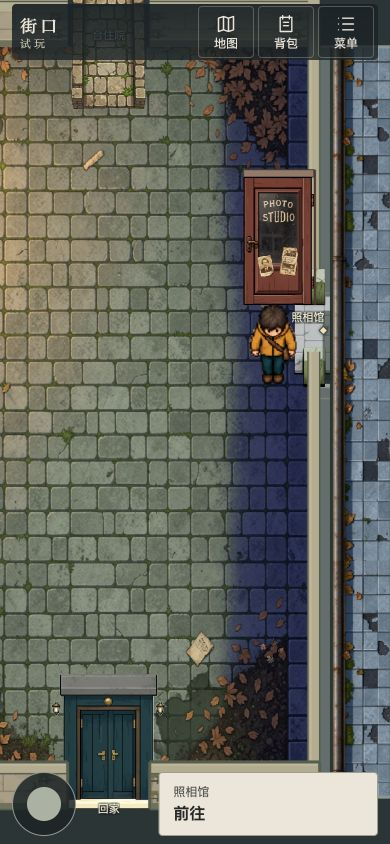
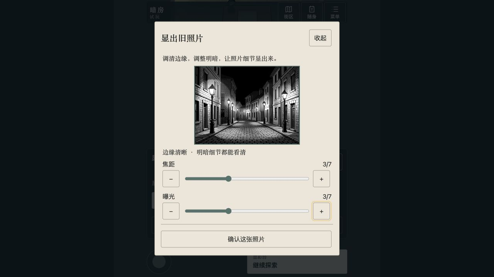

More play, more story
An old photo you find today could begin a new investigation tomorrow. AI builds on what you have already experienced to create more clues, discoveries and adventures.
We want to make the next chapter yours.
You find a letter. AI develops the mystery behind it. You follow a clue, and new places and discoveries emerge. Our ambition is a game world that keeps growing as you explore.

Think of AI as a writer travelling alongside you. It knows whom you met and what you discovered, then develops what happens next. We want new content to emerge as you play, giving the adventure room to continue.
An old photo you find today could begin a new investigation tomorrow. AI builds on what you have already experienced to create more clues, discoveries and adventures.
A new room can have a door, a table and papers hiding a clue. Walk inside, examine the objects and try things out. The story becomes something you can play.
The game remembers what you did and continues from there. Eventually, we want different players to experience different stories, with a reason to return and explore further.
Imagine a letter mentions a vanished photo studio, and you decide to investigate. We want AI to follow that curiosity: develop the clues, prepare new places and lead you towards the next mystery.
What happened to this photo studio?
AI uses the letter to develop the mystery and suggest where to look next.
The system prepares spaces and objects, turning a clue into a place to explore.
What you find becomes the beginning of the next chapter.
This is an illustration of our ambition. We are building towards it through a prototype with a limited set of scenes.
Our first prototype is The Last Letter on Old Street. Collect a letter for your family, investigate past events and develop a photograph. AI already contributes investigation materials, room-layout proposals and photo content.
Collect a letter, meet residents and search for clues. AI uses these experiences to prepare the next investigation.
We build the street, characters and core mechanics. You step inside and begin the adventure.
Knowing what has already happened gives AI a basis for continuing the story.
Select a step above to see what happens in the game.
What we are building: AI-written clues that lead to real gameplay: places to search, objects to investigate and discoveries that can start another story.
Open the current live demoYou say, “I want to open this door.” AI can bring that moment to life. But whether it opens depends on where you are, what you carry, and what you have done. Once confirmed, the outcome becomes part of the world.
Turn your own words into an intended action, with natural responses from characters and the world.
Check location, items, quests, and relationships. Approve actions that meet the rules, and explain why others fail.
Save changes to items, quests, and relationships together. Retrying the same action never applies its effects twice.
You are at the door, but there is no key in your bag.
Blocked · Key missingAI can suggest where to look for the key. Writing “the door opens” cannot give you access.
This preset illustration does not access a game save. Here, opening the door requires your presence, the key, and permission to enter.
One authoritative world record is the source of truth. AI refers to it for the story, rules check it before accepting actions, and successful actions update it.
This is one example of a relationship rule. Borrowing the key depends on recorded help and current conditions. AI can change the wording, but cannot casually rewrite what happened.
All changes succeed together, or none do. Changes to items, quests, and relationships are saved as one transaction, avoiding situations where an item is spent but quest progress is lost.
Choices last. Come back and carry on. Failures have reasons and successes leave a record. Attitudes, item ownership, and quest progress persist.
AI gives the world a voice.
Rules give it logic. Saved state gives it memory.
This describes the RPG system’s hybrid architecture. The Prolog service has been validated separately; the Old Street spatial prototype still uses its existing rules and save pipeline.
Next: how does accepted content become a scene you can see?In the Old Street prototype, you recover a film negative and AI prepares a photo connected to the investigation. The table, shelf and folder reuse existing art; the new discovery is generated for the story.


A scene can combine existing and newly generated assets. The current prototype generates clue photos; more character and scene types are future expansion areas.
AI-generated investigation materials, room-layout proposals and photos are already connected to the prototype. We are making these parts into a more coherent, enjoyable experience. Open-ended exploration remains a goal ahead.
Next, we plan to add more scenes and mechanics and improve generation speed and story quality. This is a research prototype; the live demo may not yet include every feature shown here.
Play the current releaseWe want players to enter the same changing world: explore together, share a task or leave help for someone who arrives later. AI would then continue the story from the changes players actually made.
The first multiplayer prototype for this 2D exploration system is not complete. The examples below describe the intended experience, based on our project plans.
Encounter friends in the same space, investigate a scene, exchange clues and decide where to go next.
Divide the work towards one goal: gather materials, repair equipment or open a route. Everyone’s contribution becomes part of a shared result.
Leave route tips, limited supplies or repairs for others. Temporary traces can fade, while major projects completed together can leave lasting changes.
Planned sequence: first let two players see each other in one scene, then validate one shared action, then expand to shared tasks. The full multiplayer experience still needs prototype validation.
Our next ambition is to let everyone become a game creator. Describe what you want to play or learn, and AI could help create a story, scenes and tasks that you and others can step into.
One day, you could say
“Take my students to Mars to find out why the base is running out of water.”
That idea could become an investigation: enter the base, gather evidence, inspect the water system and use what you learn to solve the problem.
A future creation concept · Not yet available“Let me explore an island ecosystem and find out why its fish are disappearing.”
Players could observe water quality, record wildlife, compare hypotheses and try changing environmental conditions. We hope to connect verified science and simulation rules to make asking, experimenting and discovering part of the game.
Possible uses: science outreach, lab lessons and interactive explanations.
“Turn this water-cycle lesson into an investigation of a town’s water shortage.”
A teacher supplies the curriculum and learning goals. AI helps create characters, clues and tasks. Students trace water sources and repair the supply while explaining what they learned. Teachers review the content and difficulty.
Possible uses: lesson adventures, levelled practice and group assignments.
“Make a travel game at my English level. Today I want to practise directions and hotel check-in.”
Visit stations, cafés and hotels, talk to AI characters and complete tasks. Future versions could adapt language and hints to the learner, bringing unfamiliar words back in later stories for practice.
Possible uses: contextual speaking, graded stories and personalised review.
These are future application concepts, not released features. Science and classroom content require reliable sources, expert review and evaluation of learning outcomes.
That is the next door we hope to open.